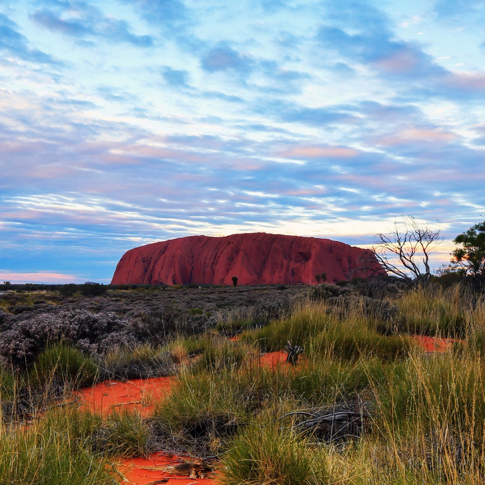

Uluru is a huge rock formation which is regarded as sacred by the Aboriginal people of Australia. You can come visit and learn about the Aboriginal culture through participation, as locals are very happy to teach people their ways.
Keep in mind when visiting, some areas of the park including areas around Uluru /Ayers Rock and Kata Tjuta / Mount Olga are considered sacred to the Anangu people. They may not be visited, filmed or photographed out of respect for their culture. While visitors are encouraged to learn about and visit this special place they are asked to respect the traditions and culture of the indigenous people.